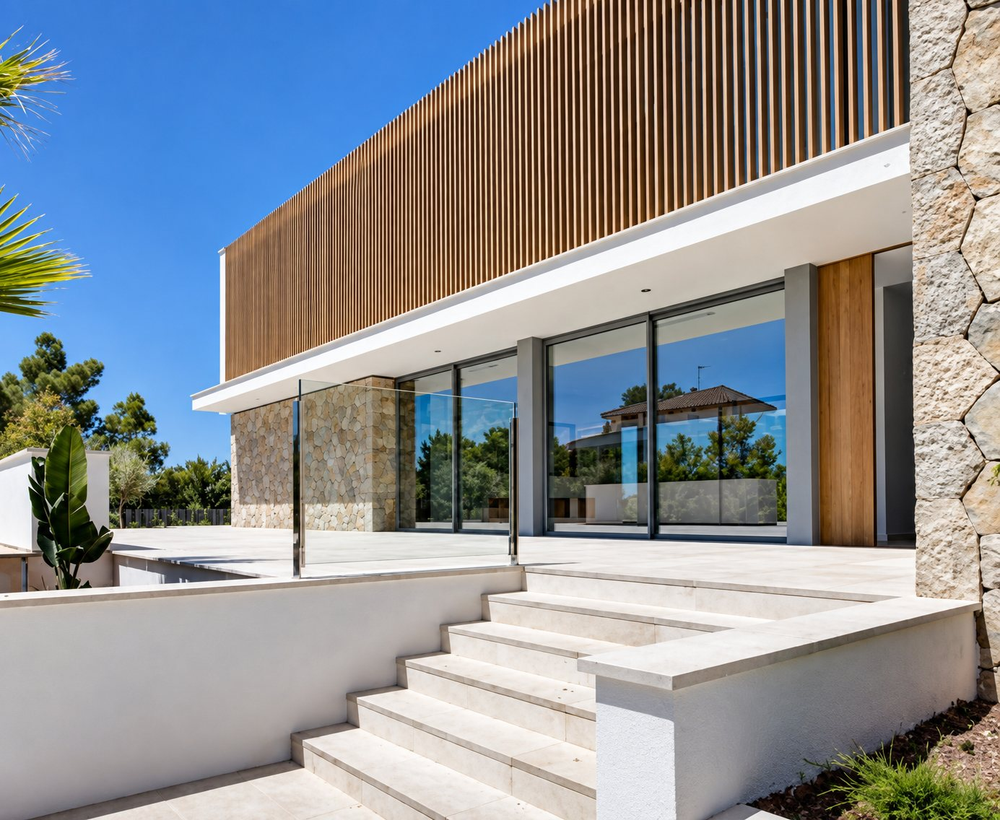
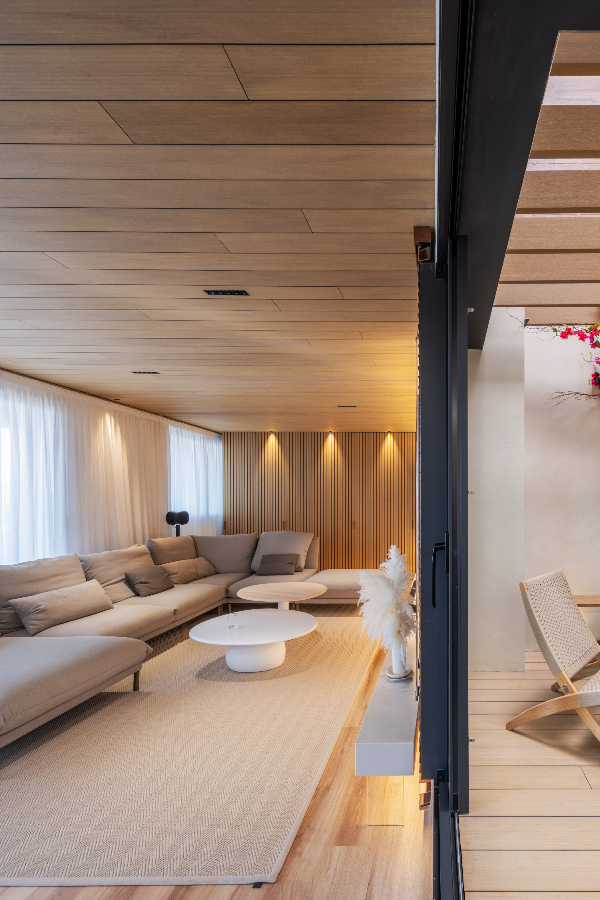
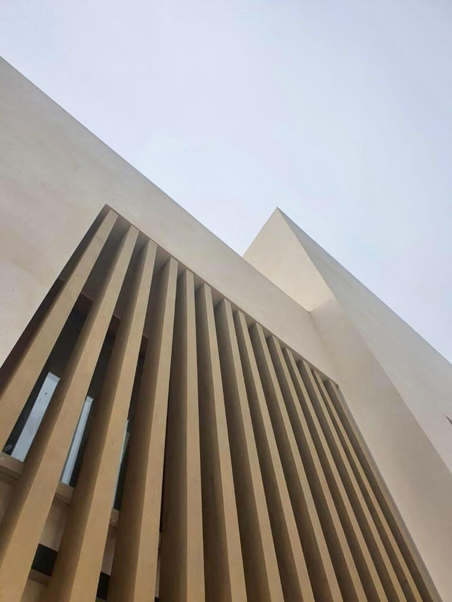
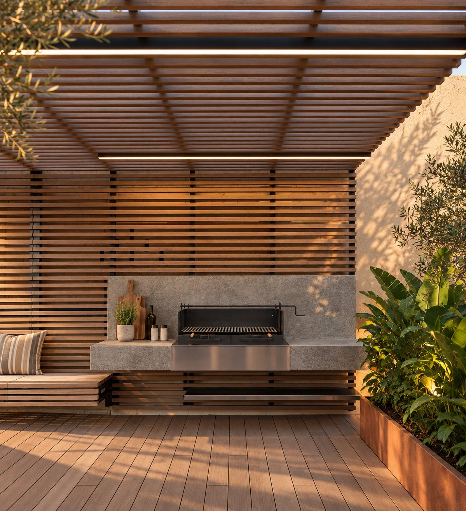
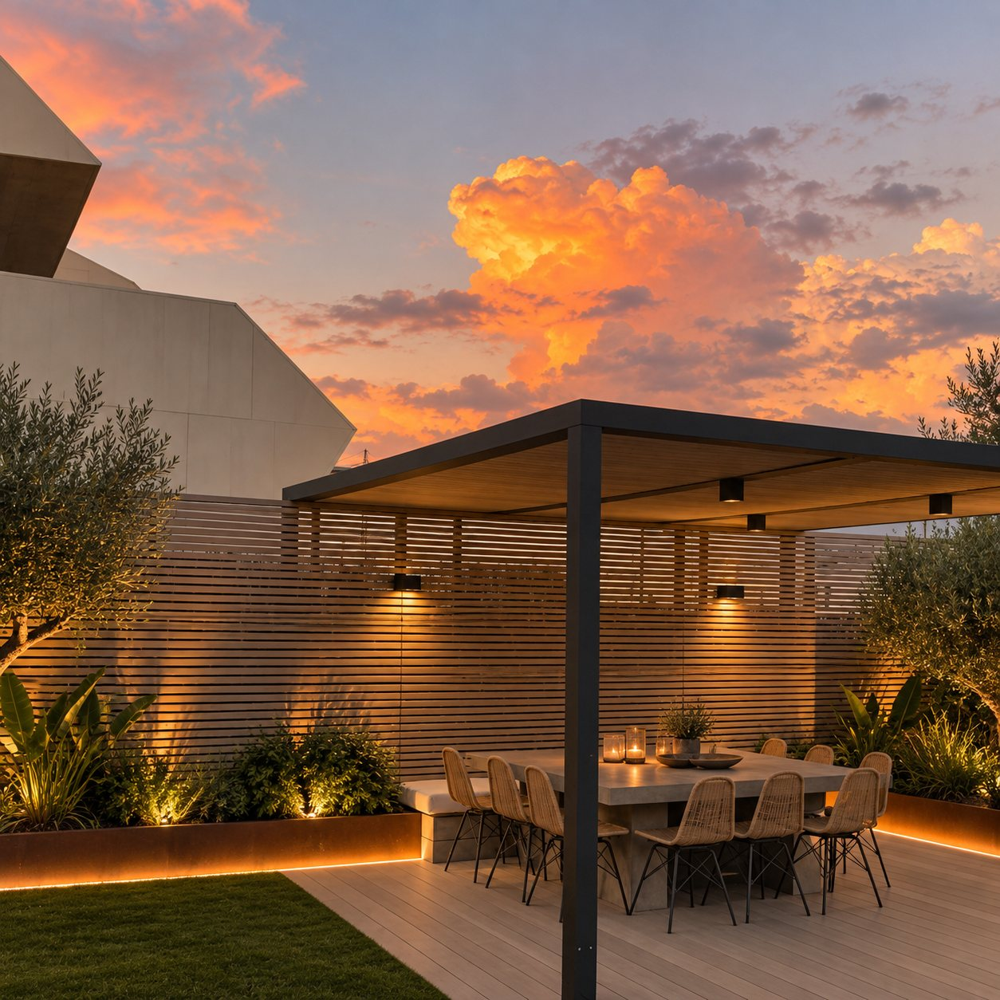
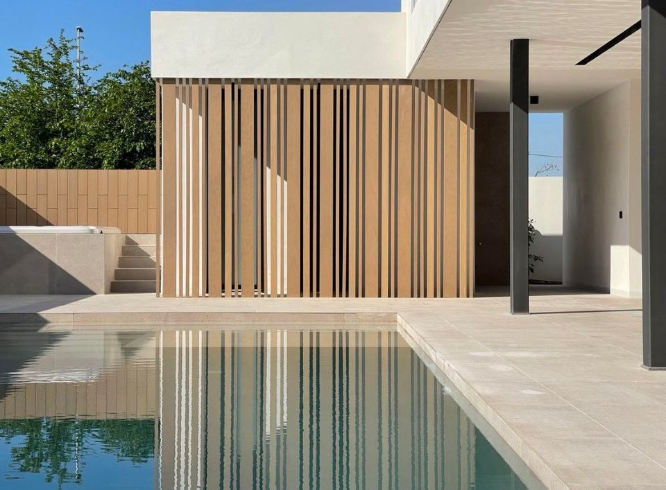
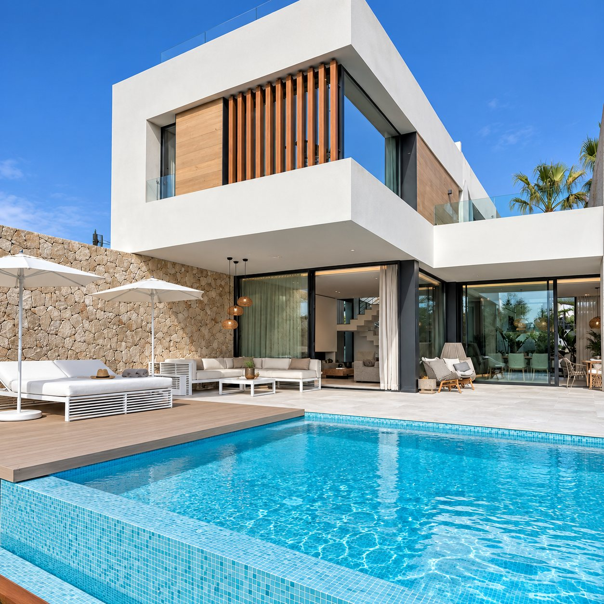

Clients ask for timber on the terrace, and you need something that holds up to sun, rain and salt air. Tarimatec is our exterior system: decking, ventilated façade cladding and screens in Ecofiber Stone Composite, made from recovered rice husk, stone and PVC. It comes in five Chromatic colours and fourteen Wood tones. It needs no oiling, varnishing or sanding, doesn't crack, chip or peel, and resists insects and fungus.
For the designer, one material and one palette run from the terrace floor to the façade and the screen. For the builder, the whole system arrives together: boards, clips and screws, on one order and one delivery. Annapurna and Aris carry the same material onto walls, ceilings and furniture, indoors and out.







Hollow boards with hidden clip fixing and no visible screws, supplied as a complete system.
Montblanc, a ventilated façade system with boards, battens and clips supplied together.
Annapurna decorative profiles for louvres, pergolas, privacy screens and feature walls, supplied as a complete system.
What it is made of and how it performs outdoors.
Chromatic: 5 flat colours · Wood: 14 tones inspired by timber.
Formats, colours, finishes, the complete fixing system and indicative pricing for decking, façade and screening, all in one place. Download it, or request a sample and we'll talk through your project.